긴장 · 땅에서 올라온 짐승 / 어린 양 같이, 용처럼 / 또 다른 짐승이 땅에서 올라옵니다. 그는 땅에 사는 자들을 처음 짐승에게 경배하게 합니다(13:12). / 어린 양 같이 두 뿔이 있고 용처럼 말을 하더라 계 13:11
 g32_06 흙길을 달리는 선수들의 다리
g32_06 흙길을 달리는 선수들의 다리불일치 의심 태그·장소·분위기
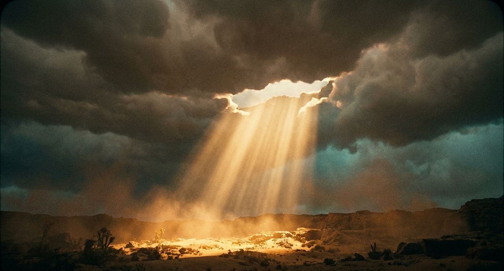
g01_15 구름 사이 빛중립 장식 중립 장식 · 최근 반복
권면 · 아직 끝나지 않은 달음질 / 푯대를 향해 / 바울은 이미 완성했다고 말하지 않고 앞을 향해 달려간다고 합니다(3:12–13). / 푯대를 향하여 그리스도 예수 안에서 하나님이 위에서 부르신 부름의 상을 위하여 달려가노라 빌 3:14 바울의 말
 g43_09 결승 기둥을 향해 달리는 사람(빌 3:14)
g43_09 결승 기둥을 향해 달리는 사람(빌 3:14)본문 설명 장면 낱말·장
g43_09 결승 기둥을 향해 달리는 사람(빌 3:14)본문 설명 본문 설명 · 낱말 푯대
배경 · 추천서 / 추천서가 필요한가 / 3–7장에서 바울은 자기가 맡은 직분을 설명합니다. 먼저 고린도 교회에 추천서가 필요하냐고 묻습니다(3:1). 바울의 대답은 이렇습니다. / 너희는 우리의 편지라 우리 마음에 썼고 뭇 사람이 알고 읽는 바라 고후 3:2
 g21_10 글을 쓰는 손(둘째 그림)
g21_10 글을 쓰는 손(둘째 그림)문맥 배경 태그·장소·분위기
g21_10 글을 쓰는 손(둘째 그림)문맥 배경 문맥 배경 · 낱말 편지 · 태그 scroll
근거 · 사람에게서 나는 향기 / 그리스도의 향기 / 바울은 자기 사역을 눈에 보이는 추천서가 아닌 향기에도 비유합니다. / 우리는 구원 받는 자들에게나 망하는 자들에게나 하나님 앞에서 그리스도의 향기니 고후 2:15 바울의 말
 g25_14 서리 앉은 돌담과 겨울 무화과나무
g25_14 서리 앉은 돌담과 겨울 무화과나무불일치 의심 태그·장소·분위기
 g01_01 어두운 물 위의 빛
g01_01 어두운 물 위의 빛중립 장식 중립 장식 · 최근 반복
근거 · 추천서가 필요한가 / 너희가 우리의 편지라 / 3장에서 바울은 추천서가 필요한지 묻고, 교회 자체를 편지라고 합니다. / 너희는 우리의 편지라 우리 마음에 썼고 뭇 사람이 알고 읽는 바라 고후 3:2 바울의 말
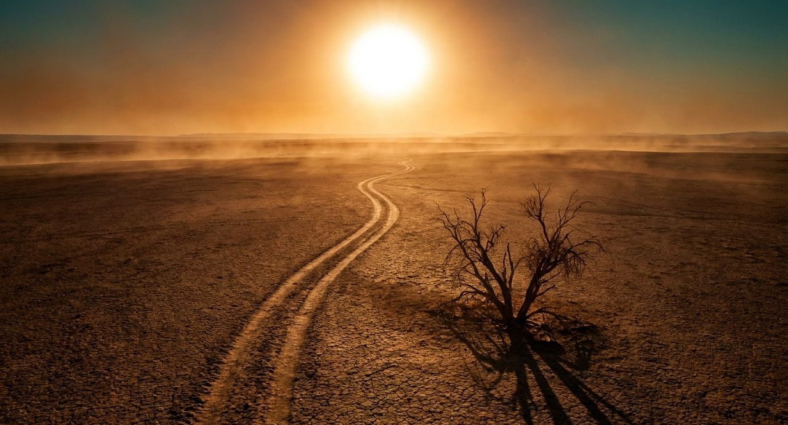
g19_10 메마른 고원의 길중립 장식 태그·장소·분위기
 g32_01 집에 모여 편지를 듣는 교회
g32_01 집에 모여 편지를 듣는 교회문맥 배경 문맥 배경 · 낱말 교회 · 최근 반복
로마서 1–3장 / 진노가 나타나고, 이제는 의가 / 온 세상의 입이 막힌 뒤, '이제는' 무엇이 나타났을까
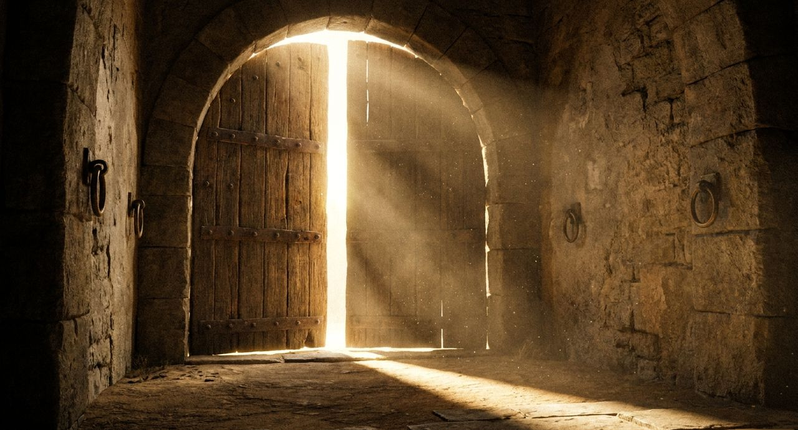
g25_02 아침 햇살이 들어오는 열린 성문불일치 의심 태그·장소·분위기
 g47_02 막사 안의 로마식 방패와 투구
g47_02 막사 안의 로마식 방패와 투구문맥 배경 문맥 배경 · 낱말 로마 · 최근 반복
긴장 · 하늘로부터 / 또 하나 나타나는 것 / 그런데 바로 다음 절에도 '나타나나니'가 있습니다. / 하나님의 진노가 불의로 진리를 막는 사람들의 모든 경건하지 않음과 불의에 대하여 하늘로부터 나타나나니 롬 1:18
 g26_08 바위 사이 흙탕 급류
g26_08 바위 사이 흙탕 급류불일치 의심 태그·장소·분위기
g01_01 어두운 물 위의 빛중립 장식 중립 장식 · 최근 반복
창세기 10–11장 / 하늘에 닿을 탑, 내려오신 하나님 / 흩어지지 않으려던 사람들이 왜 성읍 짓기를 멈추었을까
 g12_06 강가의 흙벽돌 성과 지구라트
g12_06 강가의 흙벽돌 성과 지구라트본문 설명 장면 낱말·장
g12_06 강가의 흙벽돌 성과 지구라트본문 설명 본문 설명
긴장 · 성읍과 탑 · 11:4 / 우리 이름을 내고 / 이제 그들은 성읍과 탑을 세우자고 합니다. 꼭대기는 하늘에 닿게, 이름은 널리 알리게, 사람들은 흩어지지 않게 하려는 계획입니다. / 우리 이름을 내고 온 지면에 흩어짐을 면하자 창 11:4 중 사람들의 말
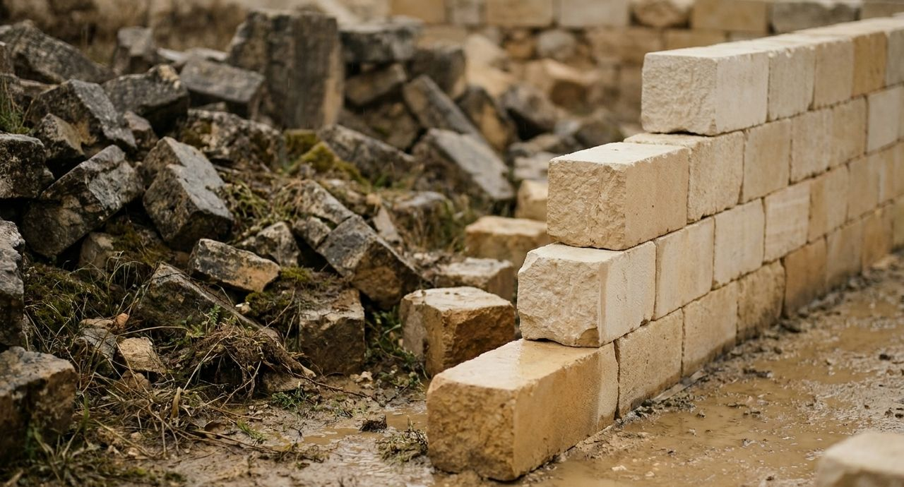
g27_14 무너진 돌 옆에 새로 쌓은 성벽불일치 의심 태그·장소·분위기
g01_01 어두운 물 위의 빛중립 장식 중립 장식 · 최근 반복
전환 · 내려오신 여호와 · 11:5 / 여호와께서 사람들이 건설하는 그 성읍과 탑을 보려고 내려오셨더라 / 하늘에 닿을 만큼 높이 쌓겠다는 탑. 그러나 그 성읍과 탑을 보려고 여호와께서 내려오십니다.
불일치 의심 태그·장소·분위기
중립 장식 중립 장식 · 최근 반복
의미 · 두 번의 제안 / 사람들의 “자”, 하나님의 “자” / 사람들이 “자”라고 말하며 탑을 세우려 합니다. 여호와께서도 “자”라고 말씀하십니다.
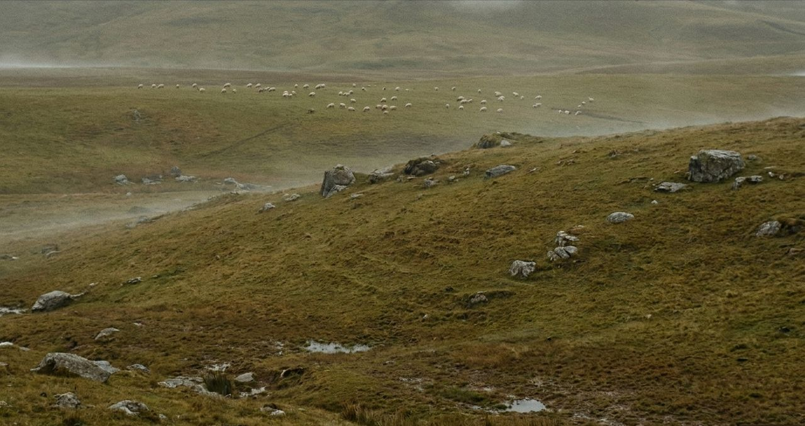
g40_11 봄비 뒤 푸른 언덕의 양 떼불일치 의심 태그·장소·분위기
 g01_13 눈 덮인 산과 들
g01_13 눈 덮인 산과 들중립 장식 중립 장식
의미 · 불러 인도하여 내는 목자 / 쫓아낸 사람들, 불러 내는 목자 / 사람들은 그를 쫓아내어 보냈습니다(9:34). 이어지는 말씀에서 예수님은 자신을 "선한 목자"(10:11)라 하시고, 목자가 양을 어떻게 내보내는지 말씀하십니다. / 양은 그의 음성을 듣나니 그가 자기 양의 이름을 각각 불러 인도하여 내느니라 요 10:3
 g22_10 잃은 양을 어깨에 멘 목자
g22_10 잃은 양을 어깨에 멘 목자본문 설명 장면 낱말·장
g22_10 잃은 양을 어깨에 멘 목자본문 설명 본문 설명 · 낱말 선한 목자 · 태그 shepherd,sheep
긴장 · 바다 앞의 백성 / 눈을 들어 본즉 / 애굽 군대가 바닷가에 장막을 친 백성을 따라잡습니다(14:9). 이스라엘 자손은 몹시 두려워하며 여호와께 부르짖습니다(14:10). / 백성은 모세에게 애굽에 남아 있던 편이 나았겠다고 말합니다. / 애굽 사람을 섬기는 것이 광야에서 죽는 것보다 낫겠노라 출 14:12
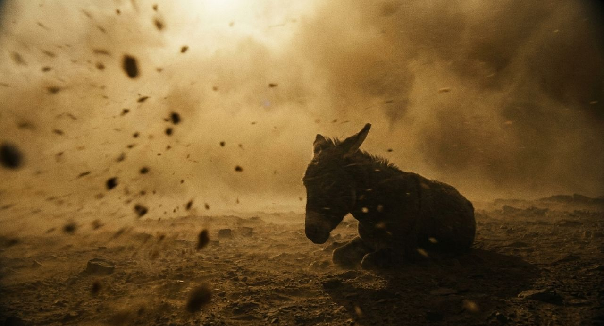
g46_05 모래바람 속에 웅크린 나귀불일치 의심 태그·장소·분위기
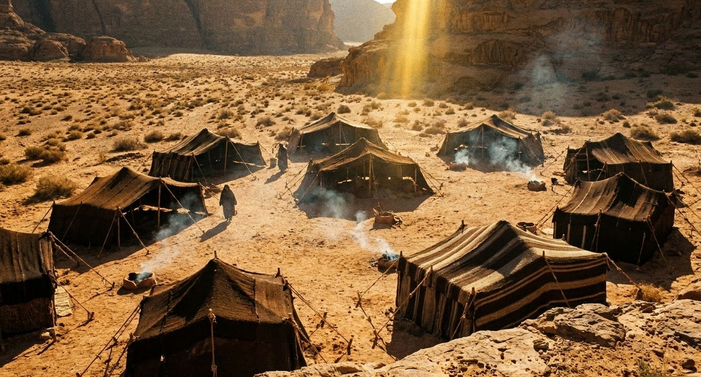
g42_06 광야에 펼쳐진 검은 장막들과 화덕 연기문맥 배경 문맥 배경 · 낱말 장막 · 태그 desert
전환 · 앞으로 나아가라 / 가만히, 그리고 앞으로 나아가라 / 이어서 여호와께서는 모세에게, 이스라엘 자손에게 명령하여 앞으로 나아가게 하라고 하십니다. 하나님이 싸우시겠다는 말씀을 들은 백성에게 걸어가야 할 길이 주어집니다. / 모세에게는 지팡이를 들고 손을 바다 위로 내밀라고 하십니다(14:16). / 이스라엘 자손에게 명령하여 앞으로 나아가게 하고 출 14:15
 g02_03 양 떼와 목자
g02_03 양 떼와 목자불일치 의심 태그·장소·분위기
 g01_09 바다 파도
g01_09 바다 파도문맥 배경 문맥 배경 · 낱말 바다 · 태그 sea
긴장 · 두 번의 이른 아침 / 서로 다른 두 아침 / 하갈과 아이를 보내는 아침, 이삭과 떠나는 아침을 견주어 보세요.
 g12_09 덤불 아래 아이와 빈 가죽부대
g12_09 덤불 아래 아이와 빈 가죽부대본문 설명 장면 낱말·장
g12_09 덤불 아래 아이와 빈 가죽부대본문 설명 본문 설명 · 낱말 가죽부대
의미 · 미리 말씀하신 자리 / 만나 주겠다고 하신 곳 / 하나님은 성막을 지으라 하실 때 거기서 모세를 만나 말씀하겠다고 하셨습니다(출 25:22). 장막이 세워진 뒤, 같은 자리에서 그 목소리가 들립니다.
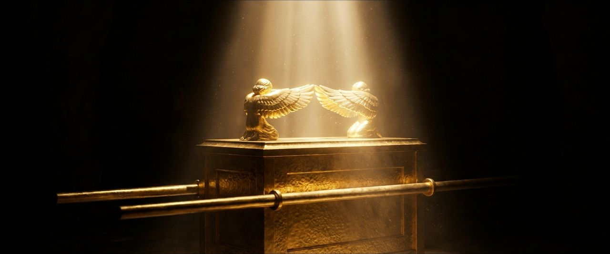
g15_01 지성소의 언약궤본문 설명 장면 낱말·장
본문 설명 본문 설명 · 낱말 속죄소
전환 · 먹여서 알게 하심 / 먹이시며 알려 주시는 하나님 / 모세와 아론은 여호와께서 백성의 원망을 들으셨다고 전합니다(16:6–8). / 저녁에는 메추라기가 오고, 아침에는 만나가 내립니다(16:13–15). 하나님은 이를 통해 백성이 무엇을 알게 될지 말씀하십니다. / 너희가 해 질 때에는 고기를 먹고 아침에는 떡으로 배부르리니 내가 여호와 너희의 하나님인 줄 알리라 출 16:12
 g46_13 추수꾼들이 떡과 볶은 곡식을 나누는 손
g46_13 추수꾼들이 떡과 볶은 곡식을 나누는 손불일치 의심 태그·장소·분위기
 g03_13 아침의 만나
g03_13 아침의 만나본문 설명 본문 설명 · 낱말 만나가
긴장 · 긍휼의 그릇 / 이방인 중에서도 / 그러므로 "오직 긍휼히 여기시는 하나님으로 말미암음이니라"(9:16). 토기장이의 비유 뒤에(9:21–23), 바울은 긍휼의 그릇이 누구인지 밝힙니다. / 이 그릇은 우리니 곧 유대인 중에서뿐 아니라 이방인 중에서도 부르신 자니라 롬 9:24
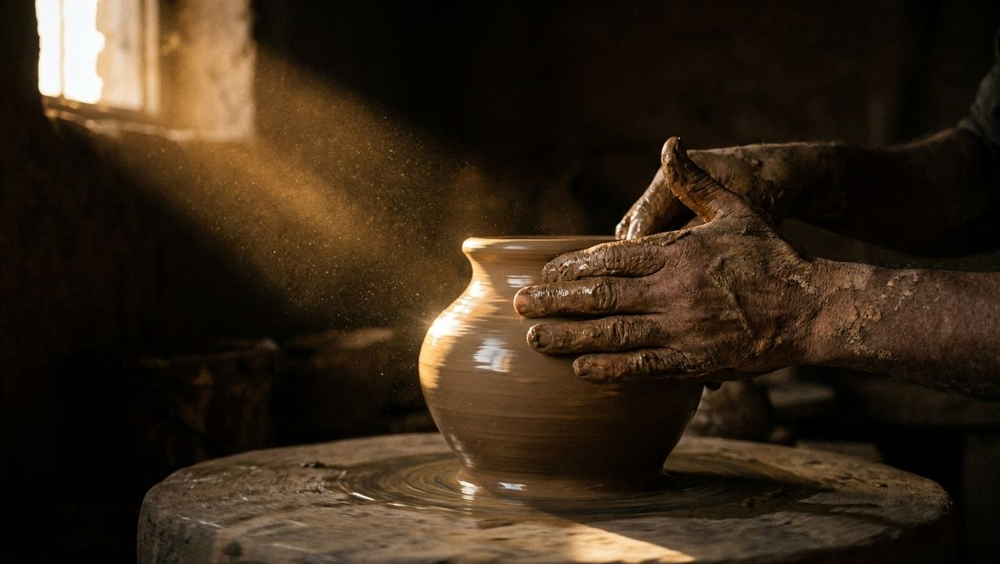
g07_07 토기장이의 손본문 설명 장면 낱말·장
 g31_04 물레 위에서 빚어지는 그릇(렘 18)
g31_04 물레 위에서 빚어지는 그릇(렘 18)본문 설명 본문 설명 · 낱말 토기장이
긴장 · 나를 보내신 이 / 알지만, 알지 못하는 / 예수님이 성전에서 가르치시며 외쳐 말씀하십니다(7:28). / 너희가 나를 알고 내가 어디서 온 것도 알거니와 내가 스스로 온 것이 아니니라 나를 보내신 이는 참되시니 너희는 그를 알지 못하나 요 7:28
불일치 의심 태그·장소·분위기
 g01_10 새벽 호수
g01_10 새벽 호수중립 장식 중립 장식 · 최근 반복
들은 것 · 셋째 천사 / 짐승과 그의 우상에게 경배하고 / 셋째 천사는 짐승에게 경배하고 표를 받는 자에게 경고합니다. / …만일 누구든지 짐승과 그의 우상에게 경배하고 이마에나 손에 표를 받으면 계 14:9 셋째 천사의 말
 g26_03 협곡으로 구불구불 내려가는 길
g26_03 협곡으로 구불구불 내려가는 길불일치 의심 태그·장소·분위기
중립 장식 중립 장식 · 최근 반복
배경 · 거듭 나오는 좋다는 말씀 · 1장 / 보시기에 좋았더라 / 하나님이 지으신 것을 좋게 보셨다는 말은 1장에 일곱 번 나옵니다(1:4, 10, 12, 18, 21, 25, 31). “저녁이 되고 아침이 되니”는 여섯 날에 반복됩니다(1:5, 8, 13, 19, 23, 31). / 일곱째 날의 안식에는 이 마침말이 없습니다(2:2–3). / 빛이 하나님이 보시기에 좋았더라 창 1:4
 g46_02 첫 햇빛이 능선만 붉게 비춘 유대 광야
g46_02 첫 햇빛이 능선만 붉게 비춘 유대 광야중립 장식 태그·장소·분위기
 g40_09 해 넘어간 뒤 보랏빛이 남은 광야 능선
g40_09 해 넘어간 뒤 보랏빛이 남은 광야 능선문맥 배경 문맥 배경 · 낱말 저녁
긴장 · 동산에서 살아가는 사람 · 2:7–17 / 흙과 숨, 그리고 동산 / 2장은 하나님이 사람을 지으시는 모습을 자세히 보여 줍니다(2:7). 하나님은 사람을 동산에 두시고, 해야 할 일과 먹어서는 안 될 열매를 알려 주십니다(2:15–17). / 여호와 하나님이 그 사람을 이끌어 에덴 동산에 두어 그것을 경작하며 지키게 하시고 창 2:15
 g01_06 갈라진 땅
g01_06 갈라진 땅불일치 의심 태그·장소·분위기
g01_01 어두운 물 위의 빛중립 장식 중립 장식
의미 · 비교해 보기 · 약속과 서원 / 하나님의 약속과 야곱의 서원 / 야곱은 벧엘에서 하나님께 서원합니다(28:20–22). 먼저 주어진 하나님의 약속과 야곱의 서원을 비교해 보세요. 야곱은 어떤 말을 되풀이하고, 무엇을 덧붙입니까?
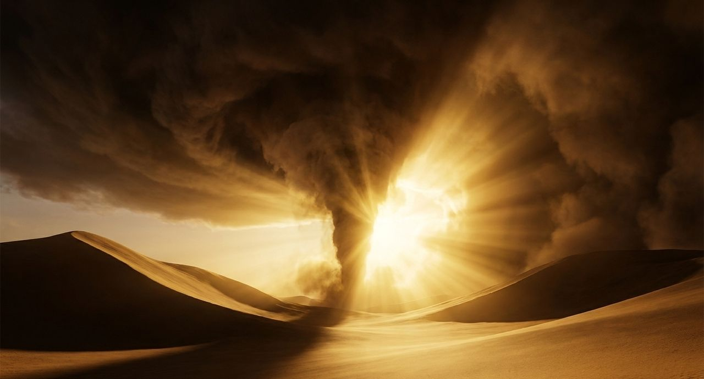
g38_03 광야 위로 몰려오는 회오리바람(욥 38)불일치 의심 태그·장소·분위기
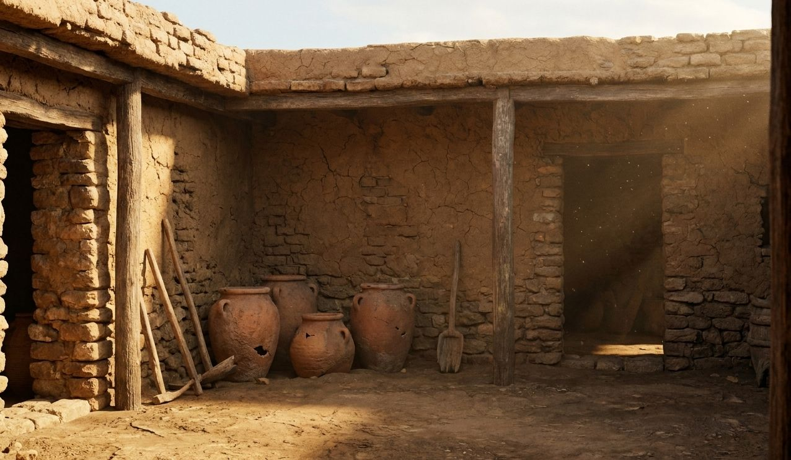
g05_04 흙벽돌 집 안뜰문맥 배경 문맥 배경 · 낱말 집으로
의미 · 비교해 보기 · 같은 배부름 / '먹어서 배부르고' 다음에 오는 말 / 같은 말로 시작하는 두 문장을 비교해 보세요. 배부른 뒤에 무엇이 이어질 수 있습니까?
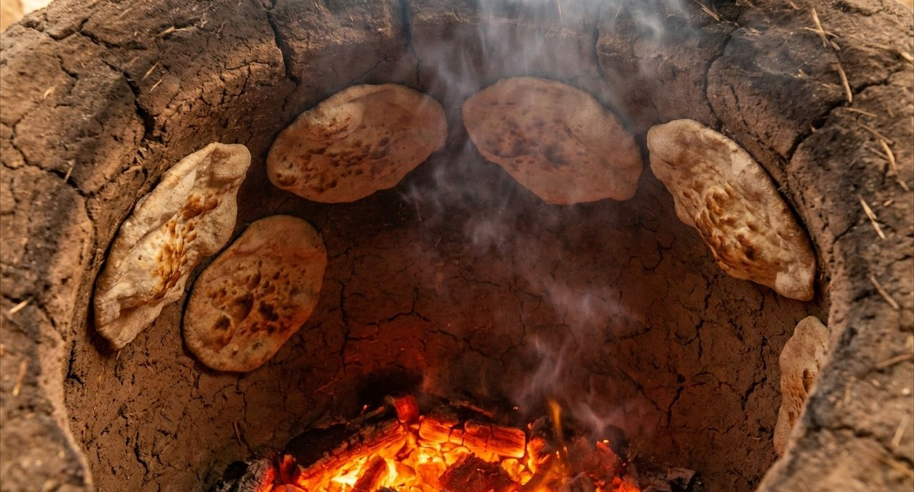
g47_15 흙 화덕 벽에 붙여 굽는 납작한 떡불일치 의심 태그·장소·분위기
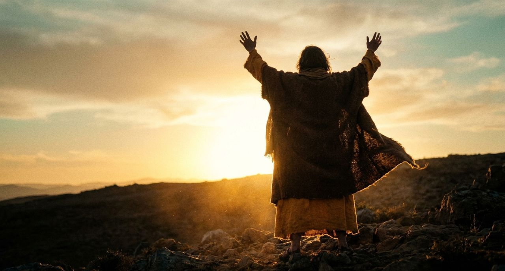
g41_02 해 뜰 무렵 언덕에서 두 팔을 든 사람문맥 배경 문맥 배경 · 낱말 찬송
의미 · 두 번의 '주의 손' / 하늘을 지으신 손, 맡기신 손 / '주의 손가락'과 '주의 손'이 물음 앞뒤에 나옵니다. / 하늘 앞에서 '사람이 무엇이기에' 하고 묻던 사람이, 주의 손으로 만드신 것을 맡은 사람으로 불립니다.
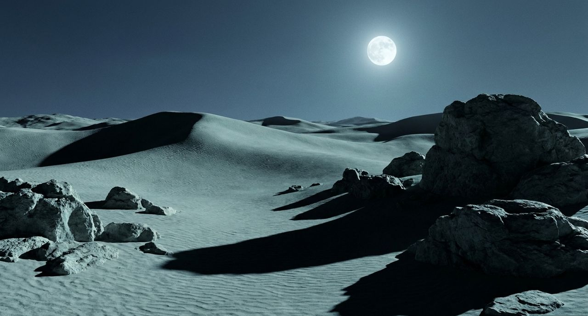
g25_09 달빛 아래 은빛 모래 언덕불일치 의심 태그·장소·분위기
문맥 배경 문맥 배경 · 낱말 달과 별 · 태그 moon
의미 · 무엇을 하든지 / 나와 같이 / 8:1의 사랑은 끝에서 "나와 같이" 자신의 유익을 구하지 않는 삶으로 그려집니다(10:33). 9장에서 쓰지 않은 권리가 그 '나와 같이'입니다. / 그런즉 너희가 먹든지 마시든지 무엇을 하든지 다 하나님의 영광을 위하여 하라 고전 10:31
 g01_08 강가 갈대
g01_08 강가 갈대불일치 의심 태그·장소·분위기
g46_02 첫 햇빛이 능선만 붉게 비춘 유대 광야중립 장식 중립 장식 · 최근 반복
의미 · 하나님의 대답 / 담당하게 하신 하나님 / 가까이 나아가는 자마다 죽느냐는 물음에, 하나님은 제사장과 레위인에게 죄를 담당하게 하심으로 대답하십니다(18:1, 23). / 이어지는 19장은 시체로 부정하게 된 사람이 다시 정결하게 되는 물의 규례입니다(19:1–22). 부정한 채로 두면 여호와의 성막을 더럽힌다고 하십니다(19:13).
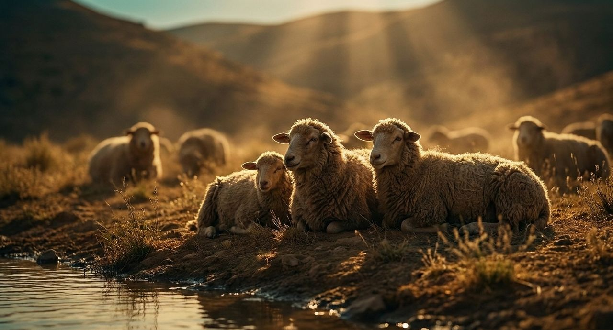
g08_07 물가의 양 떼불일치 의심 태그·장소·분위기
g01_01 어두운 물 위의 빛중립 장식 중립 장식 · 태그 water · 최근 반복
의미 · 이 말이 미쁘도다 / 다시, 선한 일 / 3장에서 바울은 우리를 구원하신 하나님의 긍휼을 말한 뒤(3:4–7), 다시 '선한 일'로 돌아옵니다. / 이 말이 미쁘도다 원하건대 너는 이 여러 것에 대하여 굳세게 말하라 이는 하나님을 믿는 자들로 하여금 조심하여 선한 일을 힘쓰게 하려 함이라 딛 3:8
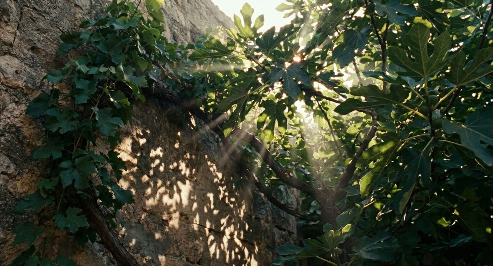
g01_12 무화과·포도덩굴불일치 의심 태그·장소·분위기
중립 장식 중립 장식 · 최근 반복
근거 · 함께 죽었거든 / 왜 다시 규례에 묶이나요? / 바울은 성도들이 그리스도와 함께 죽었다고 말합니다. / 너희가 세상의 초등학문에서 그리스도와 함께 죽었거든 어찌하여 세상에 사는 것과 같이 규례에 순종하느냐 골 2:20 바울의 말
g01_06 갈라진 땅불일치 의심 태그·장소·분위기
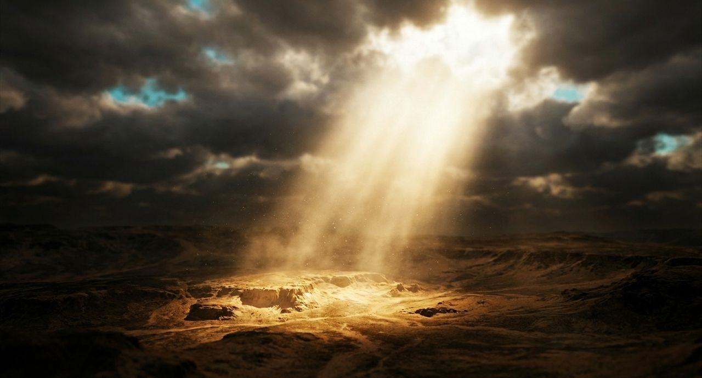
g46_03 먹구름 사이로 들판에 내리는 빛줄기중립 장식 중립 장식 · 최근 반복
배경 · 가나안에서 난 아들들 / 가나안 땅에서 태어난 아들들 / 족보에는 먼저 에서의 아내들과 아들들의 이름이 나옵니다(36:2–4). 아들들이 태어난 곳도 알려 줍니다. / 이들은 에서의 아들들이요 가나안 땅에서 그에게 태어난 자들이더라 창 36:5
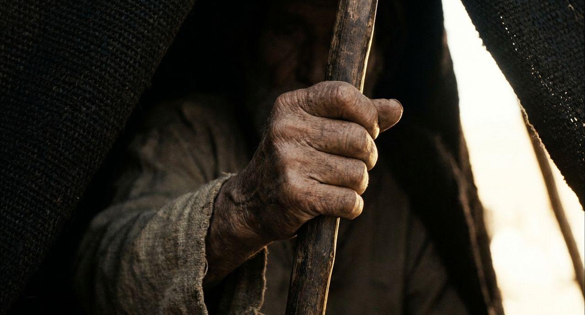
g02_02 지팡이 쥔 노인의 손불일치 의심 태그·장소·분위기
중립 장식 중립 장식 · 최근 반복
전환 · 내가 듣고 / … 이스라엘 자손의 신음 소리를 내가 듣고 나의 언약을 기억하노라 / 하나님은 "나는 여호와이니라"(6:2) 하시며, 이스라엘의 조상들과 맺으신 언약을 말씀하십니다(6:3–4).
불일치 의심 태그·장소·분위기
중립 장식 중립 장식 · 최근 반복
긴장 · 잘못 구하기 때문이라 / 구하여도 받지 못함은 / 기도하더라도 그 속에 욕심이 숨어 있을 수 있다고 지적합니다. / 구하여도 받지 못함은 정욕으로 쓰려고 잘못 구하기 때문이라 약 4:3 야고보의 말
 g26_01 돌무더기가 선 갈림길
g26_01 돌무더기가 선 갈림길불일치 의심 태그·장소·분위기
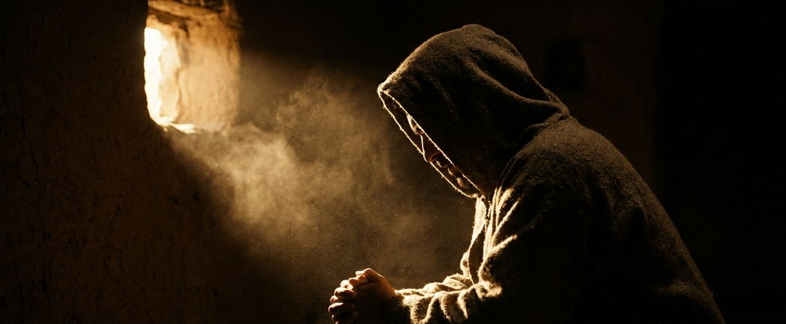
g41_01 작은 창 빛 아래 무릎 꿇고 기도하는 사람문맥 배경 문맥 배경 · 낱말 기도
전환 · 만들 제단 / 속이 빈 놋 제단 / 제단은 조각목으로 만들고 놋으로 씌우며, 네 모퉁이에 뿔을 만들라고 하십니다(27:1–2). 제단도 하나님이 산에서 보이신 대로 만들어야 합니다. / 제단은 널판으로 속이 비게 만들되 산에서 네게 보인 대로 그들이 만들게 하라 출 27:8
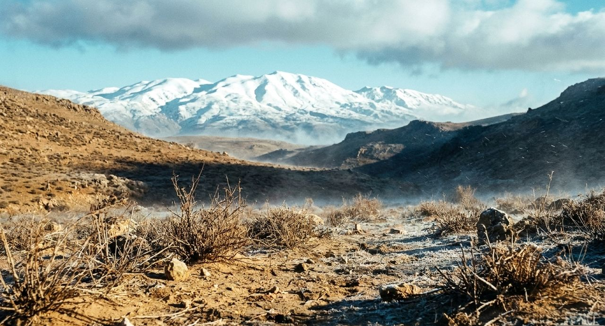
g40_04 눈 덮인 헤르몬과 마른 겨울 들불일치 의심 태그·장소·분위기
 g42_02 뿔 달린 놋 제단 위의 불
g42_02 뿔 달린 놋 제단 위의 불문맥 배경 문맥 배경 · 낱말 제단
전환 · 셀 수 없는 큰 무리 / 이 일 후에 내가 보니 각 나라와 족속과 백성과 방언에서 아무도 능히 셀 수 없는 큰 무리가 나와 흰 옷을 입고 손에 종려 가지를 들고 보좌 앞과 어린 양 앞에 서서 / 그런데 요한이 본 것을 본문은 이렇게 적습니다.
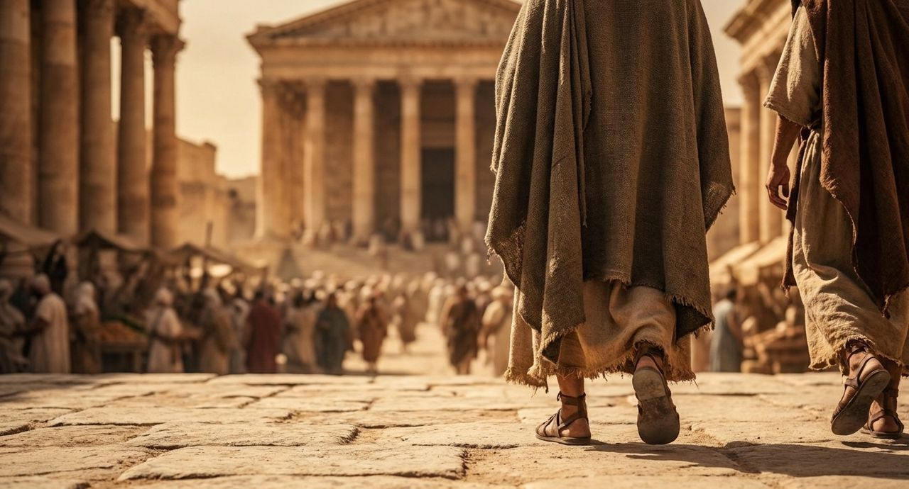
g32_04 신전과 기둥이 선 로마 도시의 광장불일치 의심 태그·장소·분위기
 g26_11 종려나무 그늘 아래 오아시스 길
g26_11 종려나무 그늘 아래 오아시스 길문맥 배경 문맥 배경 · 낱말 종려 · 태그 palm
들은 것 · 혼인 잔치 / 청함을 받은 자들은 복이 있도다 / 천사는 어린 양의 혼인 잔치에 초대받은 이들이 복되다고 말합니다. / …어린 양의 혼인 잔치에 청함을 받은 자들은 복이 있도다 하고 또 내게 말하되 이것은 하나님의 참되신 말씀이라 하기로 계 19:9 천사의 말
 g27_04 식탁 위 떡과 토기 잔, 손들
g27_04 식탁 위 떡과 토기 잔, 손들불일치 의심 태그·장소·분위기
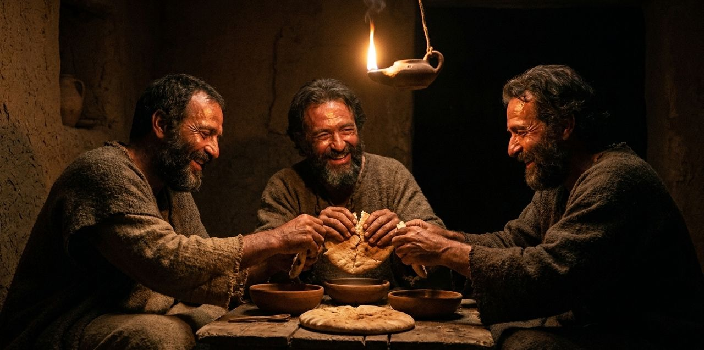
g41_07 등불 아래 떡을 떼며 웃는 사람들문맥 배경 문맥 배경 · 낱말 잔치
긴장 · 머물 곳과 먹을 것 / 기근 속의 봉양 / 요셉은 바로의 명령에 따라 애굽의 좋은 땅 라암셋에 가족이 살 곳을 마련합니다(47:11). 기근은 점점 심해져 사방에 먹을 것이 없습니다(47:13). 그 가운데서 요셉은 가족을 먹여 살립니다. / 그의 아버지와 그의 형들과 그의 아버지의 온 집에 그 식구를 따라 먹을 것을 주어 봉양하였더라 창 47:12
불일치 의심 태그·장소·분위기
g01_06 갈라진 땅문맥 배경 문맥 배경 · 낱말 기근
권면 · 하나 되게 하신 것을 / 성령이 하나 되게 하신 것 / 그 첫 걸음은 교회의 하나 됨을 지키는 일입니다. / 평안의 매는 줄로 성령이 하나 되게 하신 것을 힘써 지키라 엡 4:3 바울의 말
g25_14 서리 앉은 돌담과 겨울 무화과나무불일치 의심 태그·장소·분위기
g32_01 집에 모여 편지를 듣는 교회문맥 배경 문맥 배경 · 낱말 교회 · 최근 반복
전환 · 부르신 줄로 / 바울이 그 환상을 보았을 때 우리가 곧 마게도냐로 떠나기를 힘쓰니 이는 하나님이 저 사람들에게 복음을 전하라고 우리를 부르신 줄로 인정함이러라 / 본문은 이렇게 적습니다.
 g40_10 광야 위로 높이 솟은 흰 구름
g40_10 광야 위로 높이 솟은 흰 구름중립 장식 태그·장소·분위기
중립 장식 중립 장식 · 최근 반복
의미 · 비교해 보기 · 예상과 결과 / 나를 죽이리니, 추격하는 자가 없었더라 / 야곱이 두려워한 일과 실제로 일어난 일을 비교해 보세요. 야곱의 가족이 길을 떠났을 때, 하나님은 어떻게 그들을 지켜 주셨습니까?
g46_02 첫 햇빛이 능선만 붉게 비춘 유대 광야중립 장식 태그·장소·분위기
g01_13 눈 덮인 산과 들중립 장식 중립 장식 · 태그 mountain_peak
의미 · 비교해 보기 · 두 번 보았다는 말씀 / 보았느니라, 보았으니 / 하나님은 다시 백성이 '보았다'고 말씀하십니다(20:22). 두 말씀에서 각각 무엇을 보았다고 하시는지 비교해 보세요.
중립 장식 태그·장소·분위기
중립 장식 중립 장식
근거 · 마음판에 쓴 편지 / 먹이 아니라 영으로 / 그 편지는 돌판이 아니라 살아 있는 마음에 쓰였습니다. / 너희는 우리로 말미암아 나타난 그리스도의 편지니 이는 먹으로 쓴 것이 아니요 오직 살아 계신 하나님의 영으로 쓴 것이며 또 돌판에 쓴 것이 아니요 오직 육의 마음판에 쓴 것이라 고후 3:3 바울의 말
 g40_08 해 질 녘 언덕 위 흙벽돌 성읍
g40_08 해 질 녘 언덕 위 흙벽돌 성읍중립 장식 태그·장소·분위기
중립 장식 중립 장식 · 최근 반복
근거 · 잡히시던 밤 / …이것은 너희를 위하는 내 몸이니 이것을 행하여 나를 기념하라… / 바울은 주께 받은 말씀을 다시 전합니다(11:23).
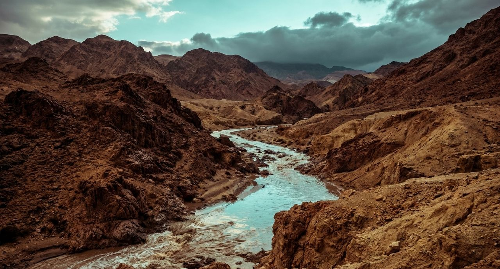
g34_14 협곡을 흐르는 광야 시냇물중립 장식 태그·장소·분위기
중립 장식 중립 장식 · 최근 반복
전환 · 따라 하지 못함 / 이는 하나님의 권능이니이다 / 온 땅의 티끌이 이가 되자, 요술사들도 이를 만들어 보려 하지만 실패합니다(8:18). 요술사들은 바로에게 이렇게 말합니다.
g01_01 어두운 물 위의 빛중립 장식 태그·장소·분위기
중립 장식 중립 장식 · 최근 반복
배경 · 유산을 나누게 하소서 / 무리 가운데 한 사람 / 무리 수만 명이 서로 밟힐 만큼 모였습니다(12:1). 그중 한 사람이 형과 유산을 나누게 해 달라고 청합니다(12:13). / 예수님은 재판장 자리를 거절하시고 이렇게 말씀하십니다(12:14). / 삼가 모든 탐심을 물리치라 사람의 생명이 그 소유의 넉넉한 데 있지 아니하니라 눅 12:15
g40_09 해 넘어간 뒤 보랏빛이 남은 광야 능선중립 장식 태그·장소·분위기
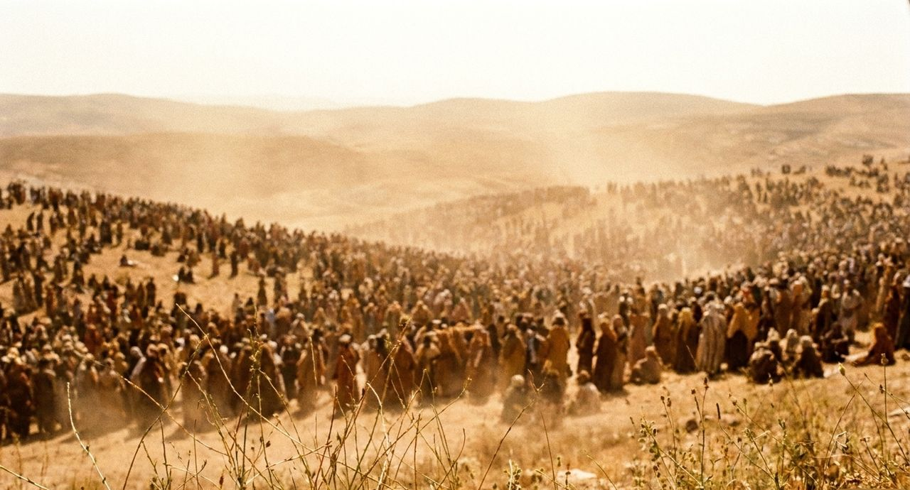
g09_05 언덕 위의 무리문맥 배경 문맥 배경 · 낱말 무리 · 최근 반복
전환 · 진영 밖에서 만나는 길 / 밖에 머무는 사람, 밖으로 나가는 제사장 / 같은 진영 밖이지만 사람과 제사장의 움직임이 다릅니다. 어디에서, 누가 누구를 확인합니까?
중립 장식 태그·장소·분위기
문맥 배경 문맥 배경 · 낱말 진영
긴장 · 한밤중 / 발에 차꼬가 채워졌지만 / 매 맞고 깊은 옥에 갇힌 두 사람은 한밤중에 기도하고 찬송합니다. / 한밤중에 바울과 실라가 기도하고 하나님을 찬송하매 죄수들이 듣더라 행 16:25 본문의 설명
 g01_02 은하수 아래 바위
g01_02 은하수 아래 바위중립 장식 태그·장소·분위기
 g47_05 감옥 바닥의 나무 차꼬와 쇠고랑
g47_05 감옥 바닥의 나무 차꼬와 쇠고랑문맥 배경 문맥 배경 · 낱말 차꼬 · 태그 prison · 최근 반복
배경 · 우리가 전하는 소식 / 빛이신 하나님 / 요한은 자기가 듣고 보고 만진 생명의 말씀을 전한다고 하며 편지를 엽니다(1:1). 그가 전하는 소식은 이것입니다. / 우리가 그에게서 듣고 너희에게 전하는 소식은 이것이니 곧 하나님은 빛이시라 그에게는 어둠이 조금도 없으시다는 것이니라 요일 1:5
g01_01 어두운 물 위의 빛중립 장식 태그·장소·분위기
g21_10 글을 쓰는 손(둘째 그림)문맥 배경 문맥 배경 · 낱말 편지 · 최근 반복
긴장 · 산파들에게 내린 명령 / 아들이거든 / 왕은 히브리 산파들에게 "아들이거든 그를 죽이고"(1:16)라고 명령합니다. 그러나 산파들은 하나님을 두려워하여 남자 아기들을 살려 둡니다(1:17). 왕이 이유를 묻자, 산파들은 히브리 여인들이 산파가 도착하기 전에 아이를 낳는다고 대답합니다(1:18–19).
중립 장식 태그·장소·분위기
 g41_13 안뜰에서 아기를 안은 어머니
g41_13 안뜰에서 아기를 안은 어머니문맥 배경 문맥 배경 · 낱말 아기
긴장 · 바울의 띠 / 이 띠 임자를 / 가이사랴에서 선지자 아가보가 바울의 띠를 가져다 자기 수족을 잡아매고 말합니다(21:10–11). / 성령이 말씀하시되 예루살렘에서 유대인들이 이같이 이 띠 임자를 결박하여 이방인의 손에 넘겨 주리라 행 21:11 아가보가 전한 성령의 말씀
중립 장식 태그·장소·분위기
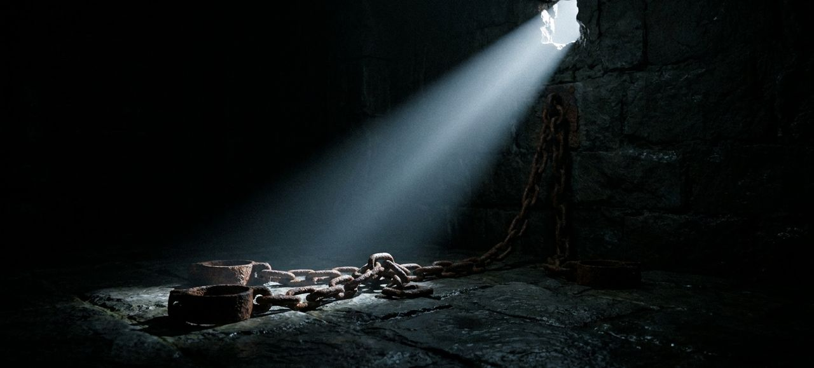
g42_10 돌벽 감옥 바닥의 쇠사슬과 한 줄기 빛문맥 배경 문맥 배경 · 낱말 결박 · 최근 반복
요한복음 13–14장 / 주여, 어디로 가시나이까 / 떠나실 때가 이른 밤, '어디로'에 예수님은 무엇으로 대답하실까
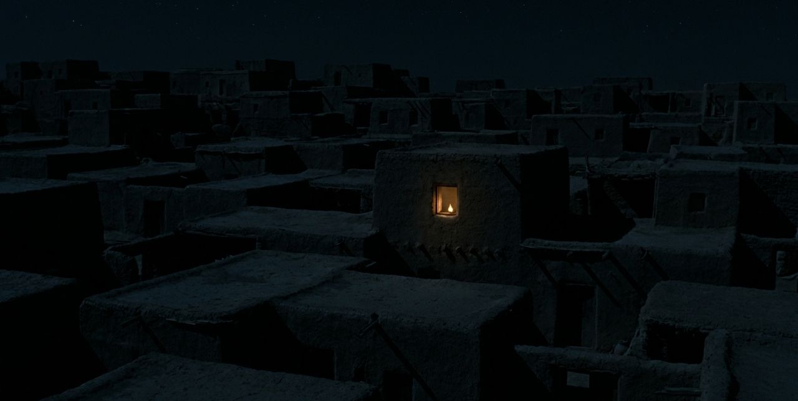
g25_10 깊은 밤 등불 하나 켜진 마을불일치 의심 태그·장소·분위기
 g23_02 제자의 발을 씻기심
g23_02 제자의 발을 씻기심본문 설명 본문 설명
창세기 46–47장 / 함께 내려가시는 하나님, 돌아갈 땅 / 다시 올라오게 하시겠다는 약속, 야곱은 어디에 묻어 달라고 할까
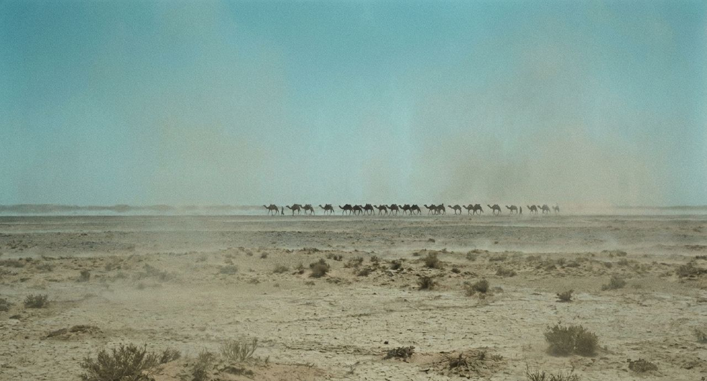
g02_14 멀리 가는 낙타 대상불일치 의심 태그·장소·분위기
 g13_06 곡식 창고와 일꾼들
g13_06 곡식 창고와 일꾼들본문 설명 본문 설명
로마서 9–11장 / 큰 근심에서 깊도다까지 / 그 사이에서 '긍휼'은 누구에게서 누구에게로 옮겨 갈까
 g34_04 밤 양 우리를 지키는 목자
g34_04 밤 양 우리를 지키는 목자불일치 의심 태그·장소·분위기
본문 설명 본문 설명
디모데전서 1–6장 / 미쁘다 이 말이여 / 세 번 돌아오는 한 마디, 그 첫 번째는 죄인의 고백과 함께 옵니다
 g04_05 토기 등잔
g04_05 토기 등잔불일치 의심 태그·장소·분위기
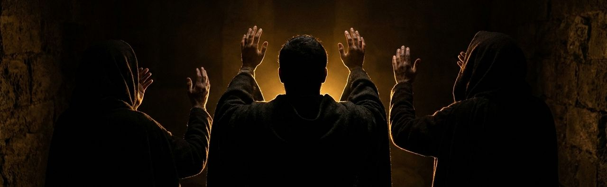
g45_08 손을 들고 기도하는 사람들의 뒷모습(딤전 2:8)본문 설명 본문 설명
시편 8–14편 / 사람이 무엇이기에 / 호소하는 시들 사이에 놓인 한 편의 찬양, 그 한가운데의 물음
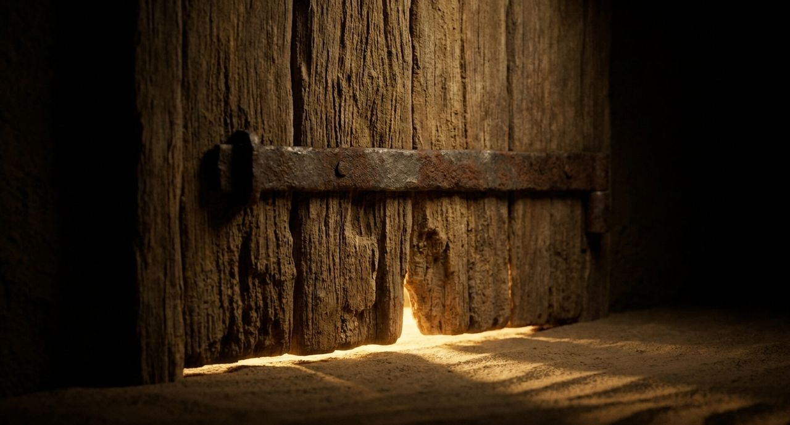
g27_03 쇠 빗장 걸린 닫힌 나무 문불일치 의심 태그·장소·분위기
 g08_02 수금 줄을 고르는 손
g08_02 수금 줄을 고르는 손본문 설명 본문 설명
배경 · 같은 옥의 두 꿈 / 해석할 자가 없도다 / 요셉이 갇힌 감옥에 바로의 두 관원장이 들어옵니다(40:1–4). 두 사람은 같은 밤에 꿈을 꾸지만, 해석해 줄 사람이 없어 근심합니다(40:5–8). 요셉이 그들에게 말합니다. / 해석은 하나님께 있지 아니하니이까 청하건대 내게 이르소서 창 40:8
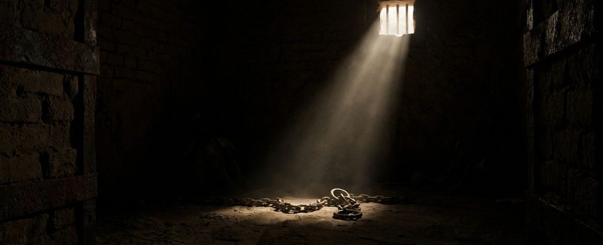
g13_03 빛이 드는 감옥본문 설명 장면 낱말·장
문맥 배경 문맥 배경 · 낱말 감옥 · 태그 prison
전환 · 싹 난 지팡이 / 레위 집을 위하여 낸 아론의 지팡이에 움이 돋고 순이 나고 꽃이 피어서 살구 열매가 열렸더라 / 이튿날 모세가 증거의 장막에 들어갑니다. 본문은 이렇게 적습니다.
본문 설명 장면 낱말·장
문맥 배경 문맥 배경 · 낱말 꽃이 피 · 태그 flowers
고린도후서 10–13장 / 약한 바울을 누가 인정합니까? / 편지는 힘 있지만 몸은 약하다고 말하는 사람들, 바울은 누구의 판단을 따를까요?
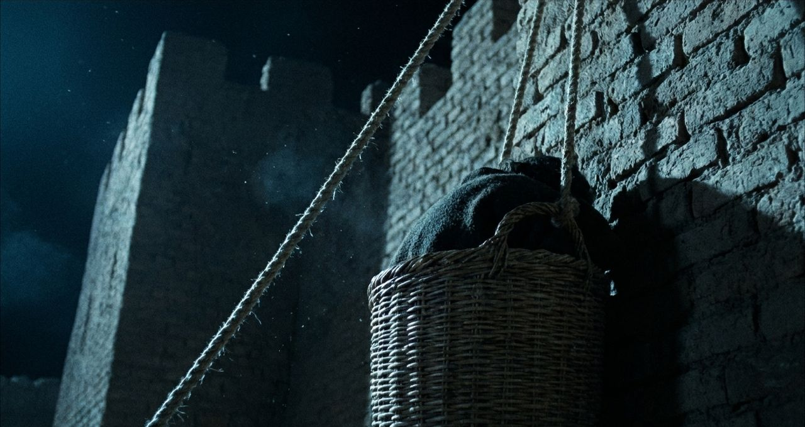
g10_06 성벽에 내린 광주리본문 설명 장면 낱말·장
문맥 배경 문맥 배경 · 낱말 편지 · 최근 반복
신명기 1–4장 / 죽게 된 세대, 살아 남은 너희 / 모압 땅에서 모세가 다시 들려주는 광야의 두 기억
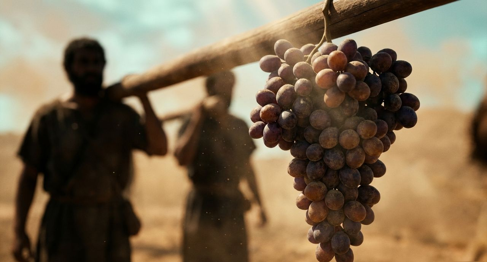
g04_12 정탐꾼의 포도송이본문 설명 장면 낱말·장
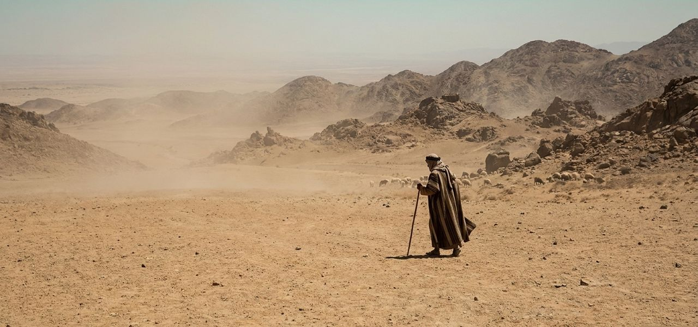
g03_05 광야의 양치기문맥 배경 문맥 배경 · 낱말 광야 · 태그 desert,wilderness_path · 최근 반복
긴장 · 아버지의 죽음과 장사 / 가나안에 장사한 뒤 / 이스라엘은 에브라임을 므낫세보다 앞세워 축복합니다(48:20). 그 뒤 열두 아들에게 말을 남기고, 자신을 장사할 굴을 알려 준 뒤 숨을 거둡니다(49:28–33). 아들들은 아버지를 막벨라 밭의 굴에 장사합니다. 요셉은 형제들과 함께 애굽으로 돌아옵니다(50:13–14).
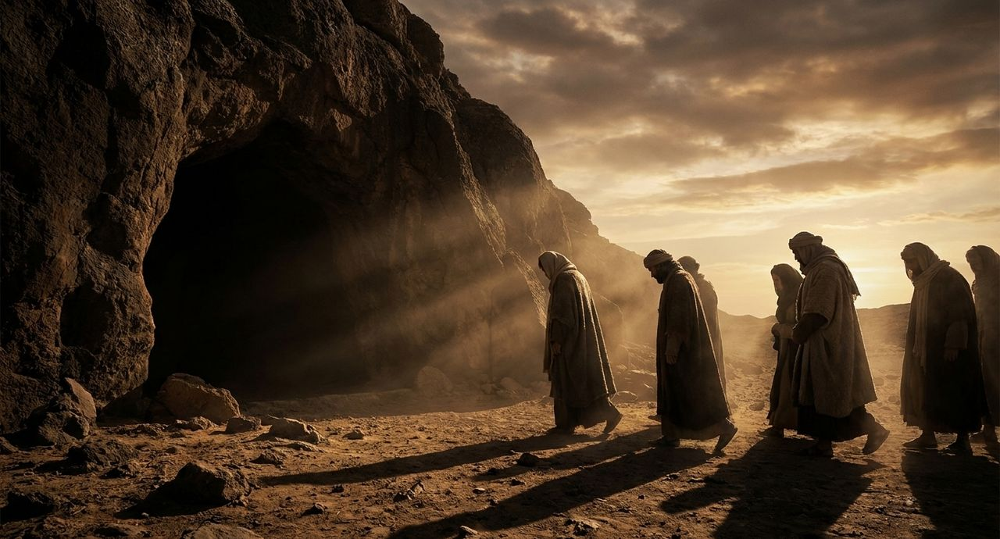
g12_15 굴로 향하는 장례 행렬본문 설명 장면 낱말·장
 g47_13 바위를 판 가족 무덤 굴 안
g47_13 바위를 판 가족 무덤 굴 안문맥 배경 문맥 배경 · 낱말 굴에 장사 · 태그 rock_tomb
출애굽기 16–18장 / 되풀이되는 원망, 먹이시는 하나님 / 마라에서 신 광야와 르비딤까지 하나님은 백성을 어떻게 돌보실까
g03_13 아침의 만나본문 설명 장면 낱말·장
문맥 배경 문맥 배경 · 낱말 광야 · 태그 desert
의미 · 비교해 보기 · 서리요, 서서 / 물음과 서 있는 무리 / 여섯째 인(6:12)과 일곱째 인(8:1) 사이에 7장이 끼어 있습니다. 두 구절을 나란히 읽어 보세요.
문맥 배경 태그·장소·분위기
g25_14 서리 앉은 돌담과 겨울 무화과나무문맥 배경 문맥 배경 · 낱말 서리
긴장 · 성물 앞에서 / 부정한 몸으로는 / 흠 있는 제사장은 제단에 가까이 하지 못한다는 규례가 이어집니다(21:16–23). 22장에서는 몸이 부정한 채로 성물에 가까이 하는 일을 금하십니다(22:3). / 그것을 속되게 하면 그로 말미암아 죄를 짓고 그 가운데에서 죽을까 하노라 나는 그들을 거룩하게 하는 여호와이니라 레 22:9
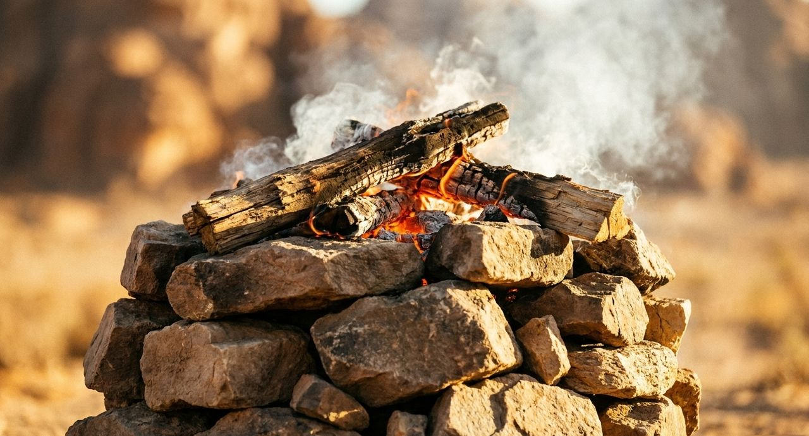
g02_04 돌 제단문맥 배경 태그·장소·분위기
g42_02 뿔 달린 놋 제단 위의 불문맥 배경 문맥 배경 · 낱말 제단
의미 · 마음에 지혜를 주신 분 / 명령하신 모든 것을 / 성소를 지은 이들은 원하는 마음으로 드렸고, 여호와께서 그 마음에 주신 지혜로 만들었습니다(35:29; 36:1). 궤와 등잔대, 제단과 뜰까지 지어집니다(37–38장). / 본문은 일을 마친 브살렐을 이렇게 적습니다. / 브살렐은 여호와께서 모세에게 명령하신 모든 것을 만들었고 출 38:22
문맥 배경 태그·장소·분위기
g04_05 토기 등잔문맥 배경 문맥 배경 · 낱말 등잔
긴장 · 배불리 먹게 하실 때에 / 짓지 않은 성읍, 파지 않은 우물 / 하나님은 백성이 건축하지 않은 성읍과 채우지 않은 집, 파지 않은 우물을 얻게 하실 것입니다(6:10–11). / 모세는 그 풍성한 때를 두고 이렇게 말합니다. / 너는 조심하여 너를 애굽 땅 종 되었던 집에서 인도하여 내신 여호와를 잊지 말고 신 6:12
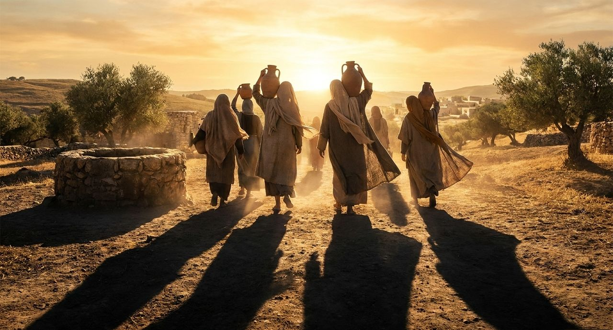
g34_05 물동이를 이고 돌아가는 저녁 길문맥 배경 태그·장소·분위기
 g46_14 돌 우물에서 물을 긷는 어머니와 아이
g46_14 돌 우물에서 물을 긷는 어머니와 아이문맥 배경 문맥 배경 · 낱말 우물 · 태그 well
긴장 · 깨소서, 깰지어다 / 누가 깨어야 하는가 / 깨어 달라는 그 외침에, 본문은 '깰지어다'로 대답합니다(51:17; 52:1). 이번에 깨어야 할 쪽은 분노의 잔을 마신 예루살렘입니다.
 g06_08 언덕 위 성읍
g06_08 언덕 위 성읍문맥 배경 태그·장소·분위기
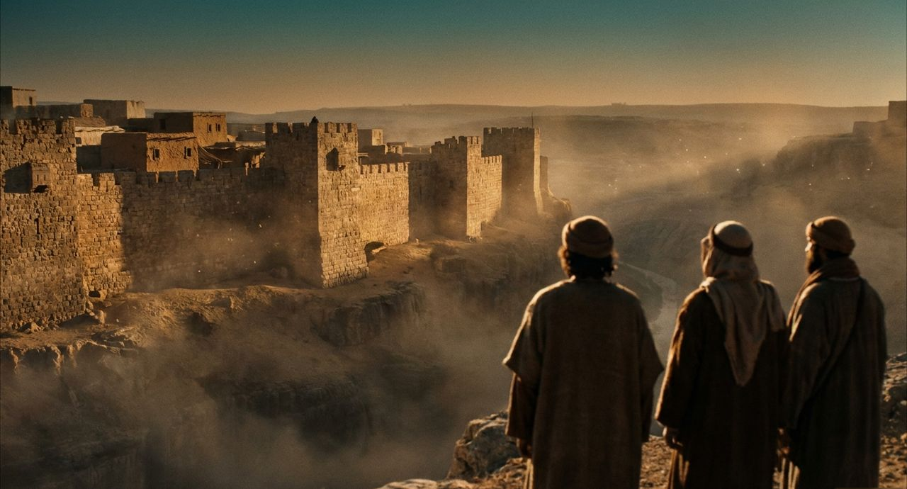
g19_01 언덕에서 바라본 예루살렘문맥 배경 문맥 배경 · 낱말 예루살렘 · 최근 반복
전환 · 보고 들은 것 / 대답과 기도 / 사도들은 보고 들은 것을 말하지 않을 수 없다고 대답합니다(4:20). 놓인 뒤에는 동료들과 함께 하나님께 소리를 높여 기도합니다(4:23–24). / 표적과 기사가 거룩한 종 예수의 이름으로 이루어지게 하옵소서 행 4:30
문맥 배경 태그·장소·분위기
문맥 배경 문맥 배경 · 낱말 기도
본 것 · 새 하늘과 새 땅 / 처음 하늘과 처음 땅이 없어졌고 / 다음 장면에서 요한은 새 하늘과 새 땅을 봅니다. / 또 내가 새 하늘과 새 땅을 보니 처음 하늘과 처음 땅이 없어졌고 바다도 다시 있지 않더라 계 21:1 요한이 본 것
g01_09 바다 파도문맥 배경 태그·장소·분위기
중립 장식 중립 장식 · 최근 반복
전환 · 두루마리를 취하시니라 / 오른손에서 두루마리를 / 어린 양이 앞으로 나와 두루마리를 받으십니다. / 그 어린 양이 나아와서 보좌에 앉으신 이의 오른손에서 두루마리를 취하시니라 계 5:7 요한이 본 것
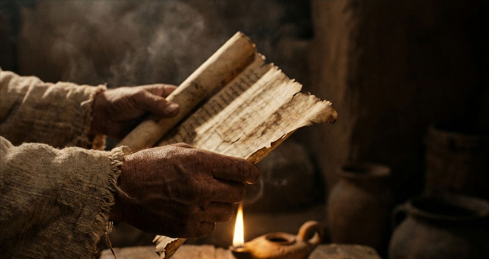
g27_01 등잔 곁에서 두루마리를 펼친 두 손문맥 배경 태그·장소·분위기
g01_10 새벽 호수중립 장식 중립 장식
배경 · 복음에는 / 하나님의 의가 나타나서 / 그가 전하려는 복음은 모든 믿는 자에게 구원을 주시는 하나님의 능력입니다(1:16). 편지의 주제가 이렇게 나옵니다. / 복음에는 하나님의 의가 나타나서 믿음으로 믿음에 이르게 하나니 롬 1:17
문맥 배경 태그·장소·분위기
중립 장식 중립 장식 · 최근 반복
긴장 · 뻗은 손 · 22:9–10 / 칼을 잡은 손 / 아브라함은 하나님이 일러 주신 곳에 도착해 제단을 쌓습니다. 이삭을 묶어 제단 위 나무에 올려놓고(22:9), 칼을 잡습니다. / 손을 내밀어 칼을 잡고 그 아들을 잡으려 하니 창 22:10
문맥 배경 태그·장소·분위기
 g01_05 노을 언덕의 감람나무
g01_05 노을 언덕의 감람나무중립 장식 중립 장식
전환 · 질그릇에 담긴 보배 / 우리가 이 보배를 질그릇에 가졌으니 이는 심히 큰 능력은 하나님께 있고 우리에게 있지 아니함을 알게 하려 함이라 / 바울은 이 형편을 이렇게 말합니다.
 g32_13 금 간 질그릇 틈으로 새는 빛
g32_13 금 간 질그릇 틈으로 새는 빛문맥 배경 태그·장소·분위기
g01_01 어두운 물 위의 빛중립 장식 중립 장식 · 최근 반복
긴장 · 굴 속의 '그 날' · 24장 / 이것이 그 날 / 그 길 가 굴에 사울이 뒤를 보러 들어갑니다(24:3). 굴 깊은 곳에서 다윗의 사람들이 말합니다. / 이것이 그 날이니이다 삼상 24:4 다윗의 사람들의 말
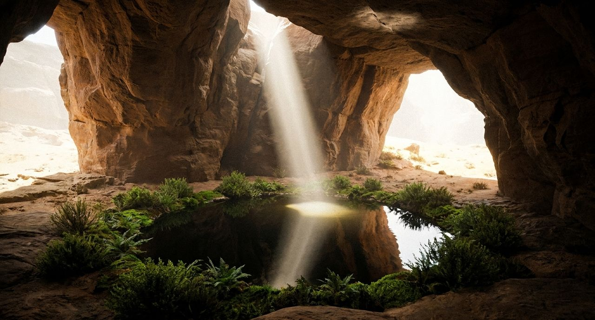
g26_09 바위 동굴 속 물웅덩이와 초록문맥 배경 태그·장소·분위기
중립 장식 중립 장식
전환 · 충성된 사람들에게 / 또 네가 많은 증인 앞에서 내게 들은 바를 충성된 사람들에게 부탁하라 그들이 또 다른 사람들을 가르칠 수 있으리라 / 2장에서 '부탁'은 한 걸음 더 나아갑니다.
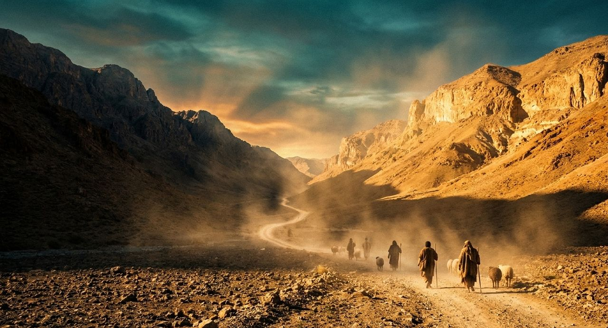
g19_09 두 산 사이 골짜기 길근거 약함 태그·장소·분위기
중립 장식 중립 장식 · 최근 반복
배경 · 외삼촌 집에서 한 약속 / 라헬을 위해 일하기로 한 칠 년 / 하란에 도착한 야곱은 외삼촌 라반의 집에 머뭅니다(29:13–14). 라반이 품삯을 묻자, 야곱은 라헬과 혼인할 수 있다면 칠 년 동안 일하겠다고 합니다(29:15–18). / 야곱이 라헬을 위하여 칠 년 동안 라반을 섬겼으나 그를 사랑하는 까닭에 칠 년을 며칠 같이 여겼더라 창 29:20
근거 약함 태그·장소·분위기
g46_02 첫 햇빛이 능선만 붉게 비춘 유대 광야중립 장식 중립 장식 · 최근 반복
전환 · 오직 자기의 피로 / 염소와 송아지의 피로 하지 아니하고 오직 자기의 피로 영원한 속죄를 이루사 단번에 성소에 들어가셨느니라 / 그런데 그리스도께서는 다른 피가 아니라 자신의 피로 들어가셨습니다.
근거 약함 태그·장소·분위기
g46_02 첫 햇빛이 능선만 붉게 비춘 유대 광야중립 장식 중립 장식 · 최근 반복
들은 것 · 왕들과 어린 양 / 어린 양은 만주의 주시요 / 왕들이 어린 양과 싸우려 하지만 천사는 어린 양의 승리를 선언합니다. / …어린 양은 만주의 주시요 만왕의 왕이시므로 그들을 이기실 터이요 또 그와 함께 있는 자들 곧 부르심을 받고 택하심을 받은 진실한 자들도 이기리로다 계 17:14 천사의 말
근거 약함 태그·장소·분위기
g01_05 노을 언덕의 감람나무중립 장식 중립 장식
긴장 · 미혹하는 자 / 진리를 행하는 자녀들 곁에 / 장로는 진리를 행하는 자녀들을 보고 심히 기뻐합니다(요이 1:4). 그런데 곧 경고가 이어집니다. / 미혹하는 자가 세상에 많이 나왔나니 이는 예수 그리스도께서 육체로 오심을 부인하는 자라 요이 1:7
근거 약함 태그·장소·분위기
중립 장식 중립 장식 · 최근 반복
긴장 · 다른 예식, 이어지는 물음 / 이것이 어찌 됨이냐 / 태에서 처음 난 것은 구별하여 여호와께 드리고, 맏아들은 대속하라는 규정이 이어집니다(13:12–13). 이번에도 모세는 훗날 아들이 물을 때를 미리 일러 줍니다. / 후일에 네 아들이 네게 묻기를 이것이 어찌 됨이냐 하거든 출 13:14
근거 약함 태그·장소·분위기
g01_05 노을 언덕의 감람나무중립 장식 중립 장식 · 최근 반복
근거 · 여러 번 막혔더니 / 편지 처음의 그 말 / 편지 첫머리에서 바울은 여러 번 가고자 했으나 "지금까지 길이 막혔도다"(1:13) 했습니다. 15장에서 그 일을 '그러므로'로 앞의 말에 잇습니다. / 그러므로 또한 내가 너희에게 가려 하던 것이 여러 번 막혔더니 롬 15:22 바울의 말
근거 약함 태그·장소·분위기
g21_10 글을 쓰는 손(둘째 그림)문맥 배경 문맥 배경 · 낱말 편지
전환 · 두루 다니며 / 그 흩어진 사람들이 두루 다니며 복음의 말씀을 전할새 / 사울은 집집마다 들어가 남녀를 끌어다가 옥에 넘깁니다(8:3). 바로 다음 절은 이렇습니다.
근거 약함 태그·장소·분위기
 g10_07 돌길을 가는 두 사람
g10_07 돌길을 가는 두 사람문맥 배경 문맥 배경 · 낱말 두루 다니
전환 · 목자 없는 양 / 회중 위에 한 사람을 / 이 말씀을 들은 모세가 여호와께 여쭙니다. 여호와를 '모든 육체의 생명의 하나님'이라 부르며, 회중 위에 한 사람을 세워 달라고 합니다(27:15–16). / 여호와의 회중이 목자 없는 양과 같이 되지 않게 하옵소서 민 27:17
근거 약함 태그·장소·분위기
g02_03 양 떼와 목자문맥 배경 문맥 배경 · 낱말 목자 · 태그 sheep
긴장 · 궁으로 간 사래 · 12:14–16 / 바로의 궁으로 / 바로의 고관들은 사래를 보고 그를 칭찬합니다. 사래는 바로의 궁으로 들어가게 되고(12:15), 아브람은 사래 덕분에 바로에게 후한 대접을 받습니다. / 아브람이 양과 소와 노비와 암수 나귀와 낙타를 얻었더라 창 12:16
근거 약함 태그·장소·분위기
문맥 배경 문맥 배경 · 낱말 낙타 · 태그 camel
긴장 · 쓸 데가 없다 / 지체가 지체에게 하는 말 / 그런데 바울이 든 몸 비유 안에는 한 지체가 다른 지체에게 하는 말이 나옵니다. / 눈이 손더러 내가 너를 쓸 데가 없다 하거나 또한 머리가 발더러 내가 너를 쓸 데가 없다 하지 못하리라 고전 12:21
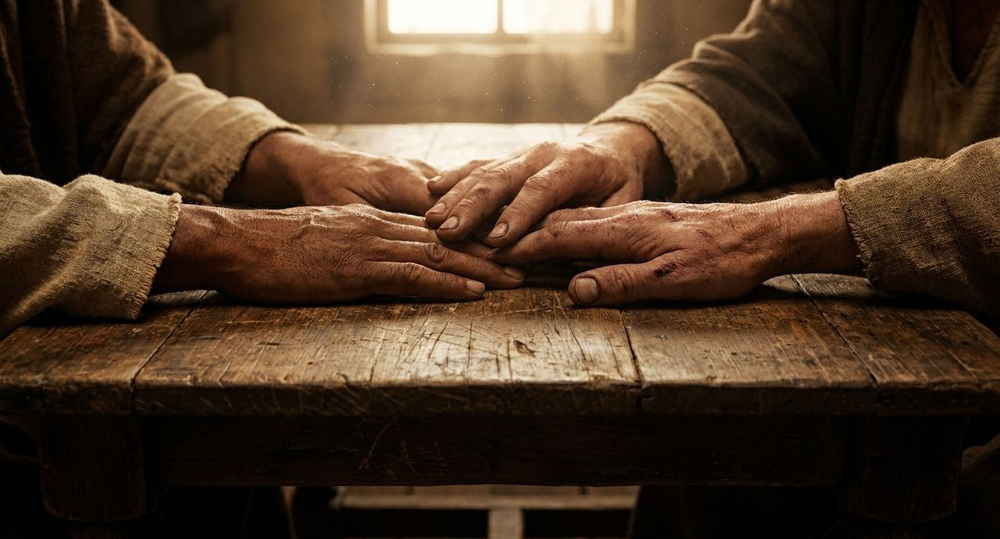
g43_06 한 상 위에서 맞닿은 여러 손(롬 12; 고전 12)본문 설명 장면 낱말·장
중립 장식 중립 장식 · 최근 반복
긴장 · 적은 누룩 / 자랑하는 것이 옳지 아니하도다 / 바울은 그 사람을 사탄에게 내주었다 하면서도 목적을 붙입니다. "영은 주 예수의 날에 구원을 받게 하려 함이라"(5:5). / 너희가 자랑하는 것이 옳지 아니하도다 적은 누룩이 온 덩어리에 퍼지는 것을 알지 못하느냐 고전 5:6
 g43_03 등잔을 들고 집 바닥을 살피는 사람(고전 5:7)
g43_03 등잔을 들고 집 바닥을 살피는 사람(고전 5:7)본문 설명 장면 낱말·장
중립 장식 중립 장식
근거 · 돌감람나무인 네가 / 뿌리의 진액을 함께 / 이제 바울은 "이방인인 너희에게"(11:13) 말을 돌리고, 감람나무 하나를 그려 보입니다. / 또한 가지 얼마가 꺾이었는데 돌감람나무인 네가 그들 중에 접붙임이 되어 참감람나무 뿌리의 진액을 함께 받는 자가 되었은즉 롬 11:17 바울의 말
g10_07 돌길을 가는 두 사람불일치 의심 태그·장소·분위기
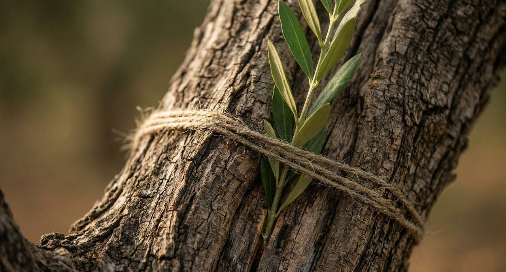
g32_09 감람나무에 묶어 접붙인 가지비유 설명 비유 설명 · 낱말 접붙 · 태그 olive_tree
긴장 · 막힌 길 / 사탄이 우리를 막았도다 / 그런데 바울은 그들을 떠나 있습니다. 한번 두번 가고자 했으나 길이 막혔습니다(2:17–18). / 우리의 소망이나 기쁨이나 자랑의 면류관이 무엇이냐 그가 강림하실 때 우리 주 예수 앞에 너희가 아니냐 살전 2:19
g26_03 협곡으로 구불구불 내려가는 길불일치 의심 태그·장소·분위기
비유 설명 비유 설명 · 낱말 면류관 · 태그 wreath
이사야 51–55장 / 산을 넘는 발, 그리고 상한 종 / '네 하나님이 통치하신다'는 소식, 그 소식은 누구의 상함을 지나 오는가
g46_02 첫 햇빛이 능선만 붉게 비춘 유대 광야중립 장식 태그·장소·분위기
 g12_01 빛이 드는 동산과 강
g12_01 빛이 드는 동산과 강본문 설명 본문 설명
고린도후서 3–7장 / 질그릇에 담긴 보배 / 죽은 자 같으나 살아 있는 사람들, 심히 큰 능력은 누구에게 있는가
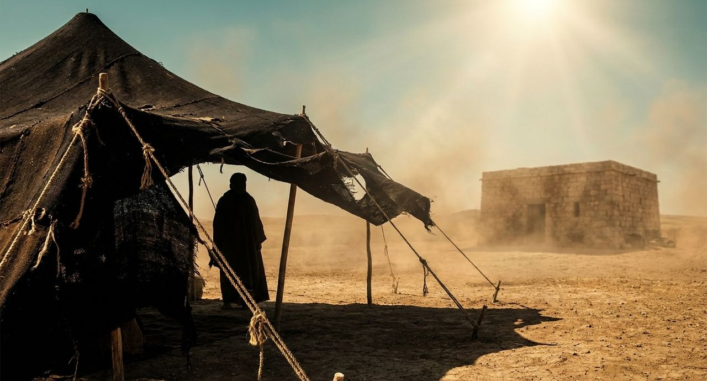
g43_04 찢어진 천막과 멀리 선 돌집(고후 5:1)본문 설명 장면 낱말·장
g32_13 금 간 질그릇 틈으로 새는 빛비유 설명 비유 설명 · 낱말 질그릇 · 태그 clay_jar
긴장 · 거센 광풍 / 잔잔하던 남풍이 바뀌다 / 남풍이 순하게 불자 사람들은 뜻을 이룬 줄 알고 출항했습니다. 그러나 얼마 못 가서 유라굴로라는 광풍이 일어납니다. / 남풍이 순하게 불매 그들이 뜻을 이룬 줄 알고 닻을 감아 그레데 해변을 끼고 항해하더니 행 27:13 본문의 설명 / 얼마 안 되어 섬 가운데로부터 유라굴로라는 광풍이 크게 일어나니 행 27:14 본문의 설명
g01_09 바다 파도문맥 배경 태그·장소·분위기
 g32_12 바닷속 바위에 박힌 닻
g32_12 바닷속 바위에 박힌 닻비유 설명 비유 설명 · 낱말 닻을 · 태그 sea
권면 · 마지막에 필요한 힘 / 전신 갑주를 취하라 / 편지 마지막에서 바울은 다른 사람과의 싸움을 부추기지 않고 영적인 대적 앞에 서라고 권합니다(6:12). / 그러므로 하나님의 전신 갑주를 취하라 이는 악한 날에 너희가 능히 대적하고 모든 일을 행한 후에 서기 위함이라 엡 6:13 바울의 말
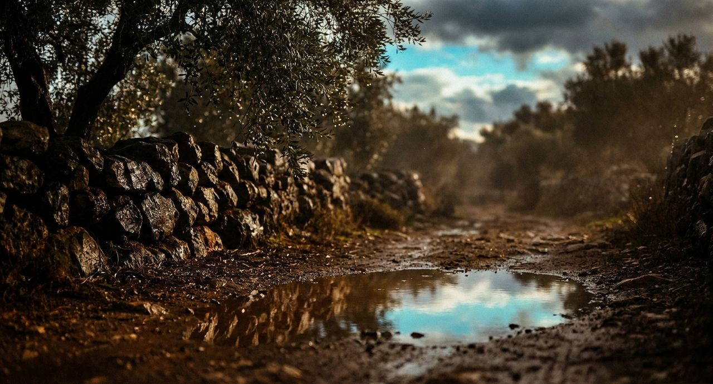
g40_02 비 갠 흙길의 물웅덩이와 감람나무중립 장식 태그·장소·분위기
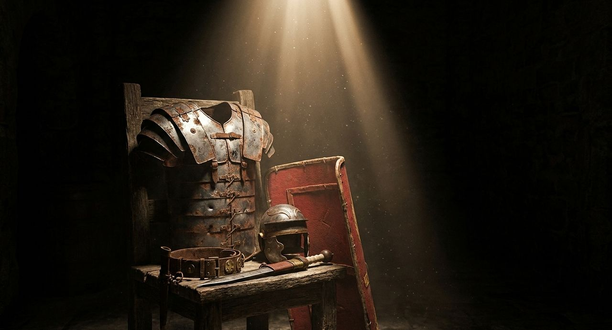
g32_08 의자 위에 놓인 갑주와 방패비유 설명 비유 설명 · 낱말 전신 갑주